MatchBrief — Arsenal vs Bayern Munich (Sample Carousel)
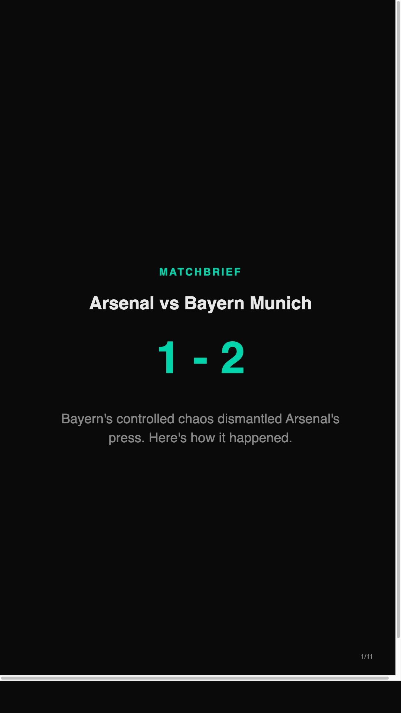
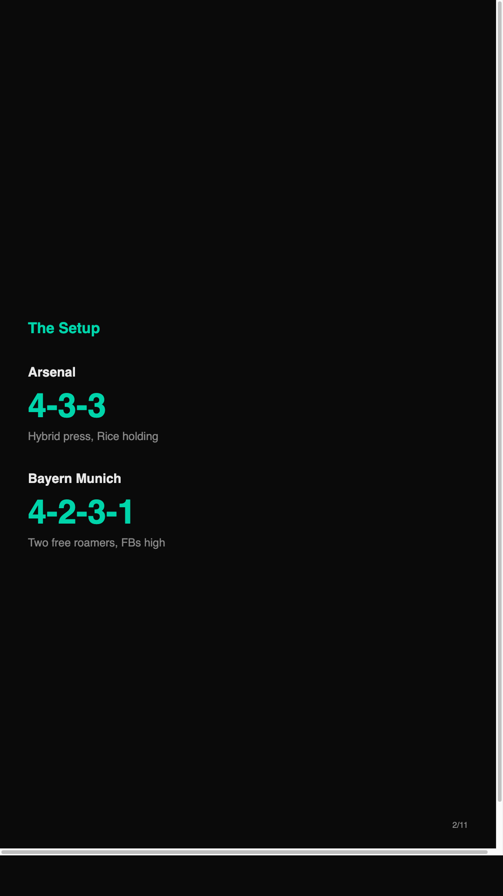
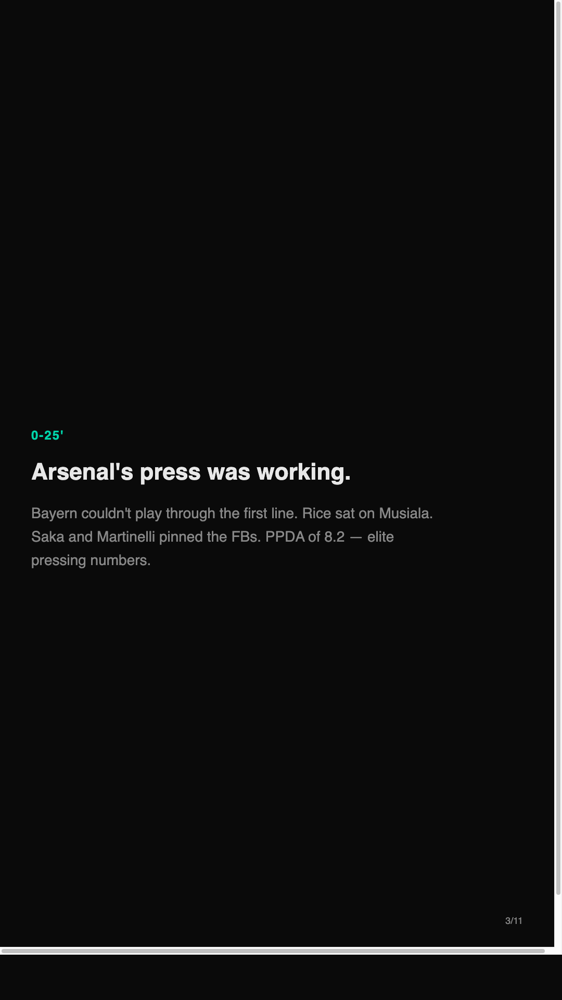
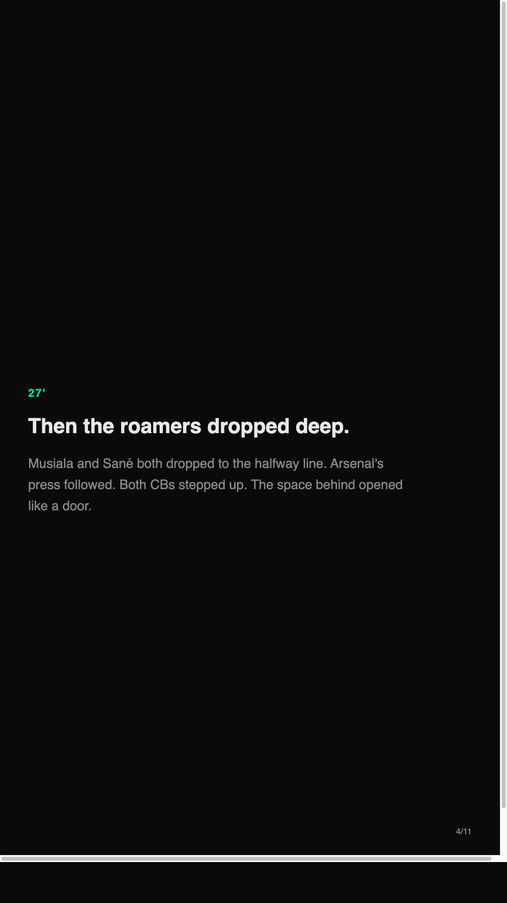
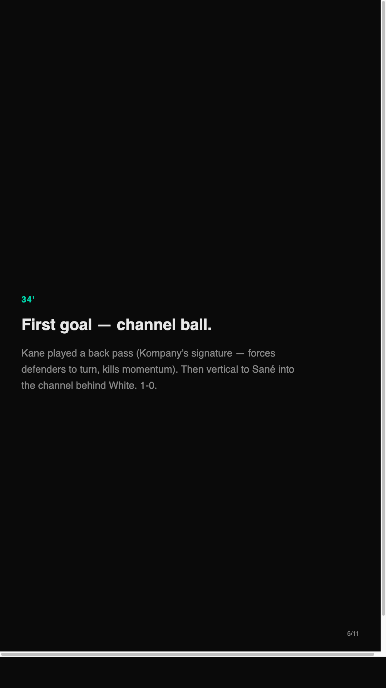
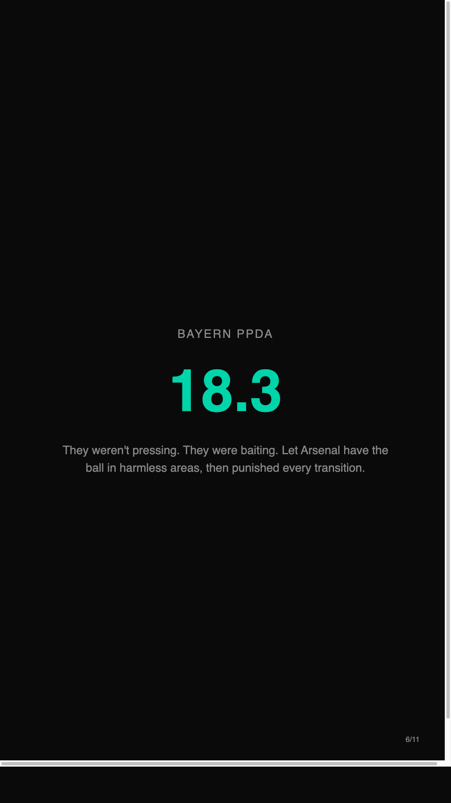
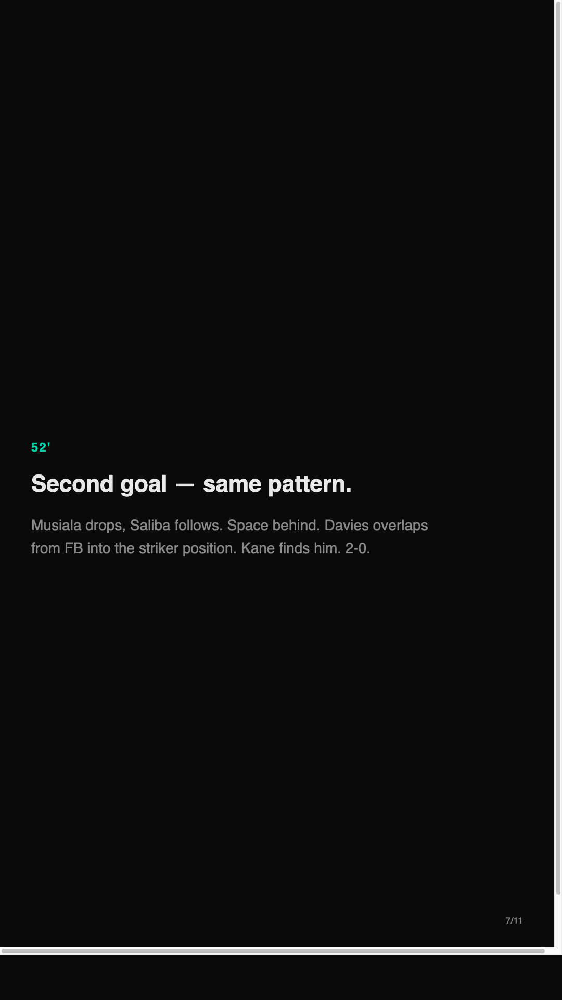
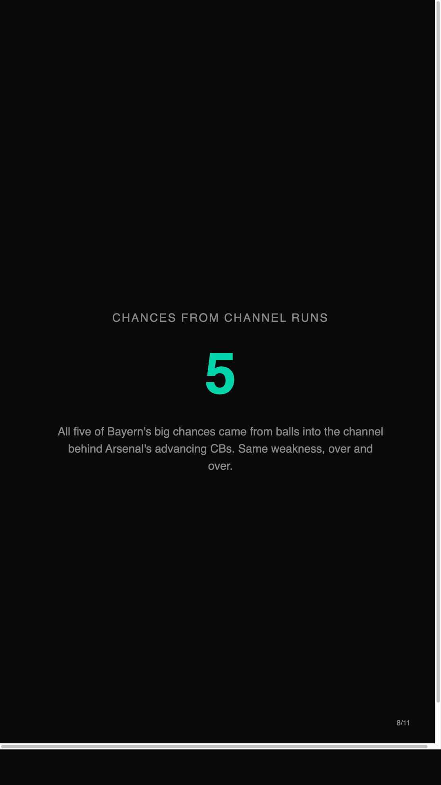
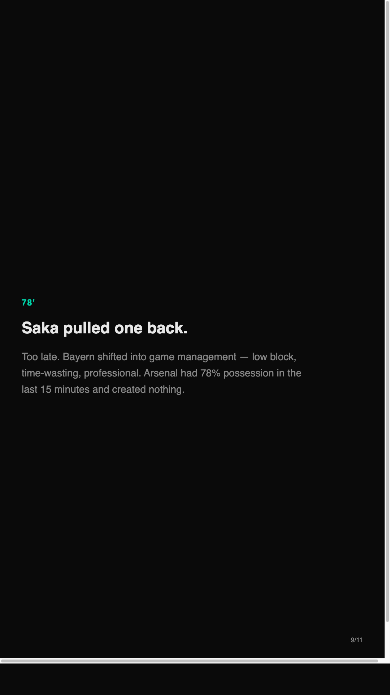
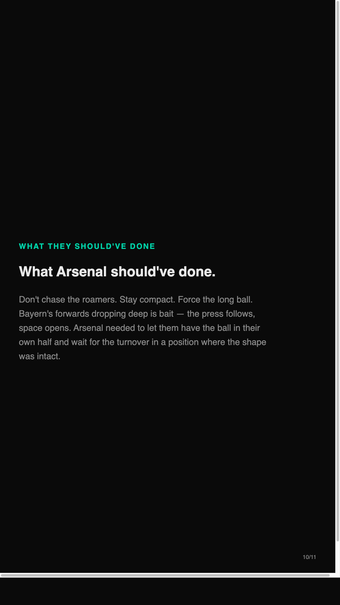
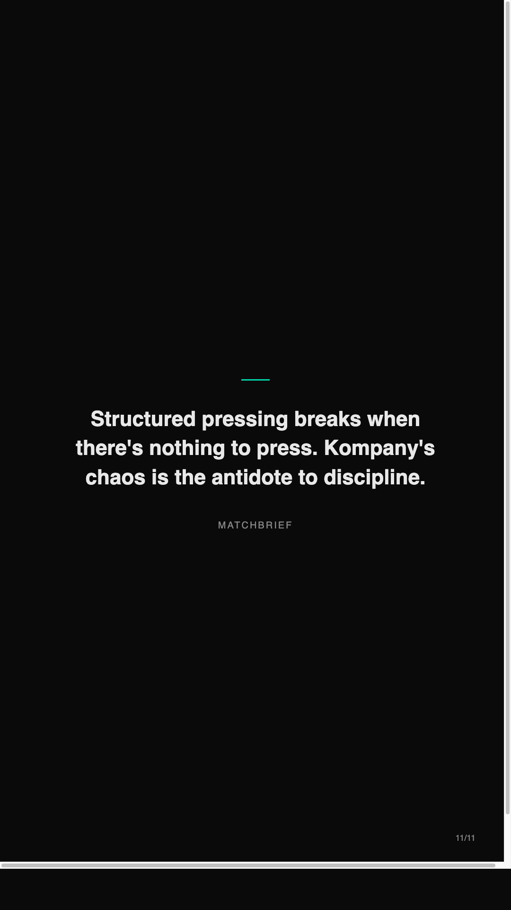
Arsenal 1-2 Bayern Munich — Champions League Quarter-Final
Arsenal's hybrid press had Bayern rattled for 25 minutes. Then Kompany's side did what they do: they broke the pattern.
Bayern's two free roamers (Musiala and Sané) dropped so deep that Arsenal's press had nothing to engage. Both CBs stepped up. Space behind. Two balls into the channel later, it's 2-0.
Arsenal's adjustment came too late — Saka pulled one back in the 78th but Bayern's game management saw it out.
The story: Bayern's controlled chaos beats structured pressing when the press has no target to engage. Arsenal needed to stay compact and force the long ball instead of chasing the roamers.
Key number: Bayern's PPDA was 18.3 — they weren't pressing. They were baiting.
#MatchBrief #UCL #Arsenal #Bayern #TacticalAnalysis